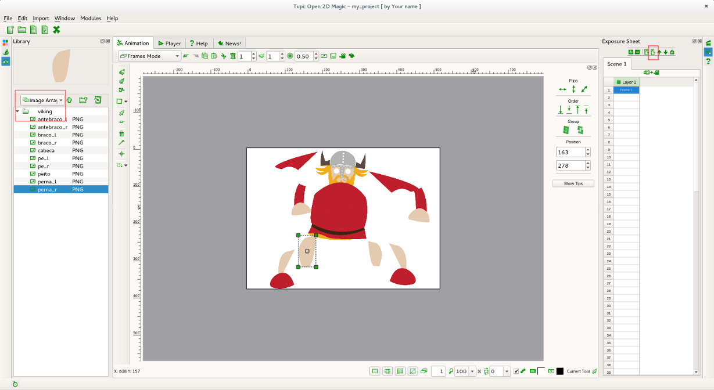
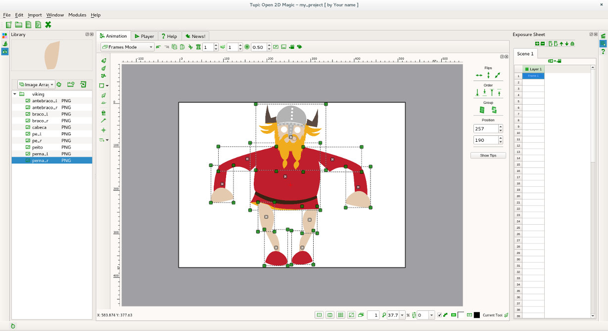

Antes de iniciar este exercício, certifique-se que já fez o primeiro exercício de início rápido!
1.1 O primeiro passo é importar as imagens cut-out. Ative a opção Biblioteca clicando no respetivo botão, barra lateral esquerda.
Escolha importar sequência de imagens para importar as imagens todas de uma vez. Também pode escolher importar uma imagem e depois selecionar várias imagens (pode selecionar várias imagens de uma só vez selecionando-as enquanto clica no Shift).
No exemplo, vamos importar as imagens de uma personagem criada por Célia Rolo. Se quiser utilizar as mesmas images clique aqui.
O Tupi vai importar as 10 imagens do viking para 10 frames (uma imagem por frame). Na X-sheet remova todas a frames menos a primeira utilizando o botão para remover frames ou através do menu de contexto (botão direito do rato).
1.2 Depois de importadas as imagens para o Tupi, importe as mesmas para a área de trabalho. Redimensione e posicione as imagens seguindo a imagem abaixo. Se desejar, pode agrupar as imagens.
1.3 Agora é altura de animar!
Selecione na X-sheet a primeira frame (onde tem o viking posicionado/dimensionado corretamente) e clique em Ctrl + Page Down (copia frame atual para frame seguinte). Também pode utilizar o menu de contexto (botão direito do rato) e clicar no Copy Frame e Paste In Frame.
Na frame seguinte (a frame duplicada) mova a imagem (ou imagens) que pretende animar e continue!
Para rodar os objetos, com o objeto selecionado, clique duas vezes no centro (na cruz) ou utilize o atalho ALT+R.